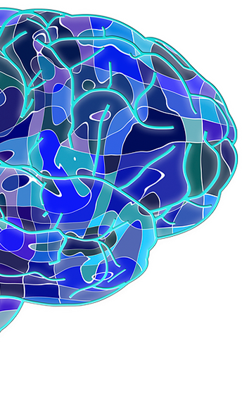
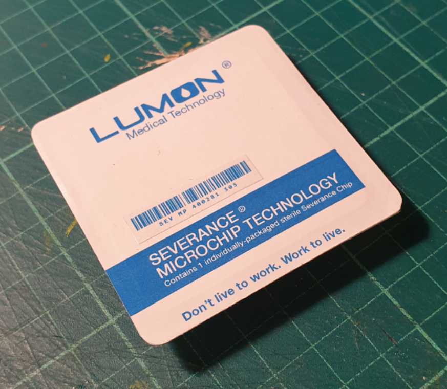

Separacion
¿Que es la separacion?

La separacion es un proceso mediante el cual se separan los recuerdos de una persona de los relativos al trabajo. De este modo, cuando la persona se encuentre en el trabajo no recordara nada de su vida personal, al igual que tampoco recordara el trabajo cuando este fuera de el, ni lo que ha sucedido durante su jornada laboral.
Un ejemplo visual
Aunque cercanas, dos lineas paralelas nunca se tocan entre si.
¿Como funciona la separacion?
Gracias a un chip introducido cerca de la amigdala mediante un sencillo proceso quirurgico se consigue la separacion espacial de los recuerdos de su receptor.
Impacto de la separacion en nuestros trabajadores desde su implantacion
| Periodo | Felicidad | Productividad |
|---|---|---|
| 2015-2016 | 14% | 20% |
| 2016-2017 | 20% | 30% |
| 2017-2018 | 32% | 38% |
| 2018-2019 | 48% | 50% |